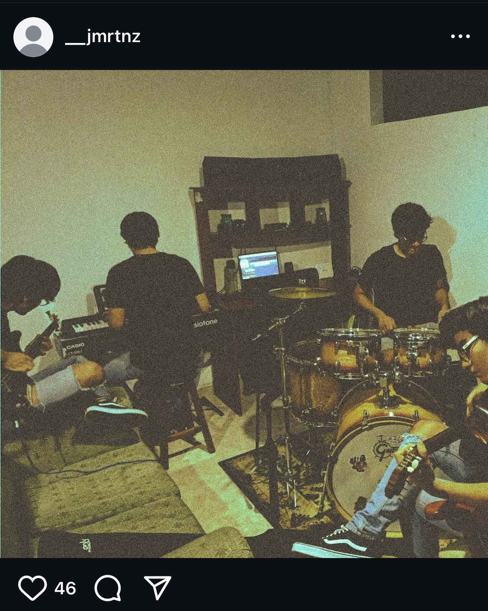
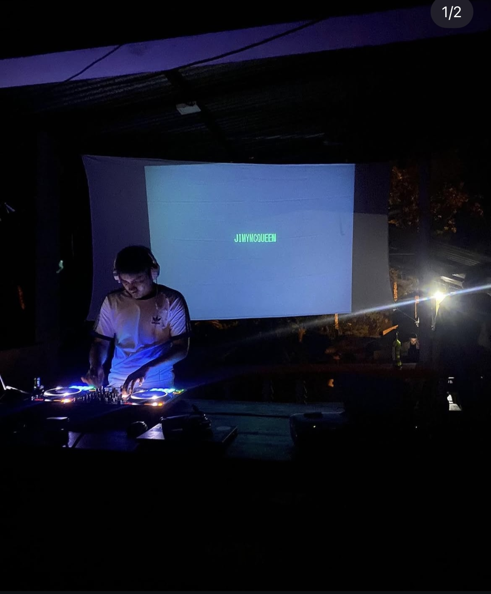
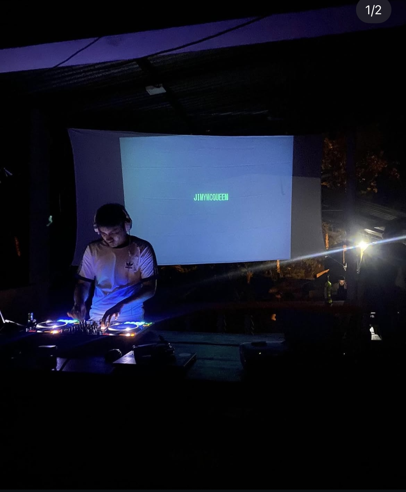

Sobre Mí
Mi nombre es Jaime Andres Martinez Cuellar, soy estudiante de noveno semestre de Derecho y músico independiente. Me apasiona el estudio del Derecho Constitucional, los Derechos Humanos y el arte.
Me considero una persona crítica, autodidacta y apasionada por el arte. He particiapdo en diferentes bandas de Rock de la ciudad de Florencia - Caqueta y tengo mi proyecto independiente como productor musical de musical electronica.

Experiencia Musical
Funde Cronicida con mis amigos de la infancia, un proyecto de rock y punk el cual estuvo activo entre el 2013 y 2015, En 2018 hice parte de CAVERNA una banda Hardcorepunk, en los dos proyectos tocaba la bateria, era arreglista y autor de algunas canciones. He trabajado en proyectos musicales como solista bajo el nombre de Jmrtnz y Jimmy McQueen. Exploro sonidos techno y a su vez presentaciones DJse. He producido pistas, escrito letras y he realizado presentaciones con el colectivo Deutschland de la ciudad de Florencia - Caqueta.
- Producción de beats
- Grabación y mezcla en DAW como Ableton Live
- Distribución independiente a través de plataformas digitales
Escúchame en:
 

Experiencia Laboral
A&G Abogados: dependiente judicial entre el 2022 y 2024, enfocados en temas laborales, seguridad social y pensiones.